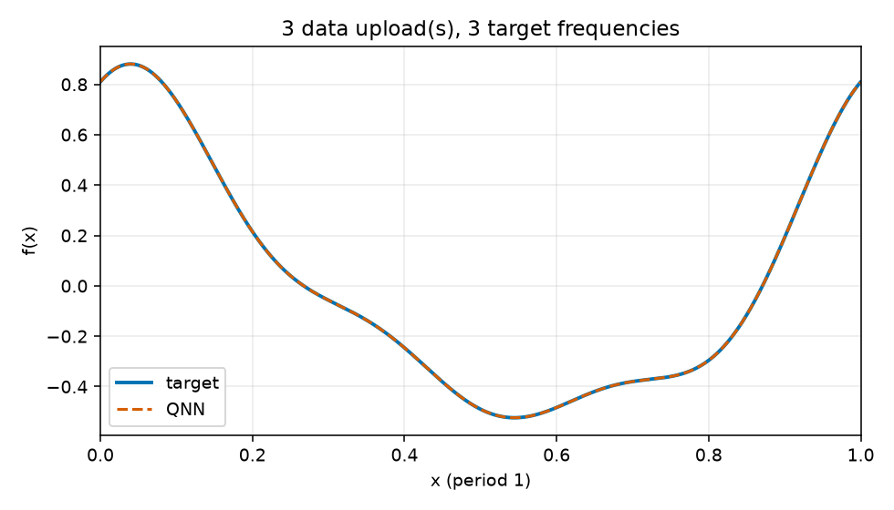
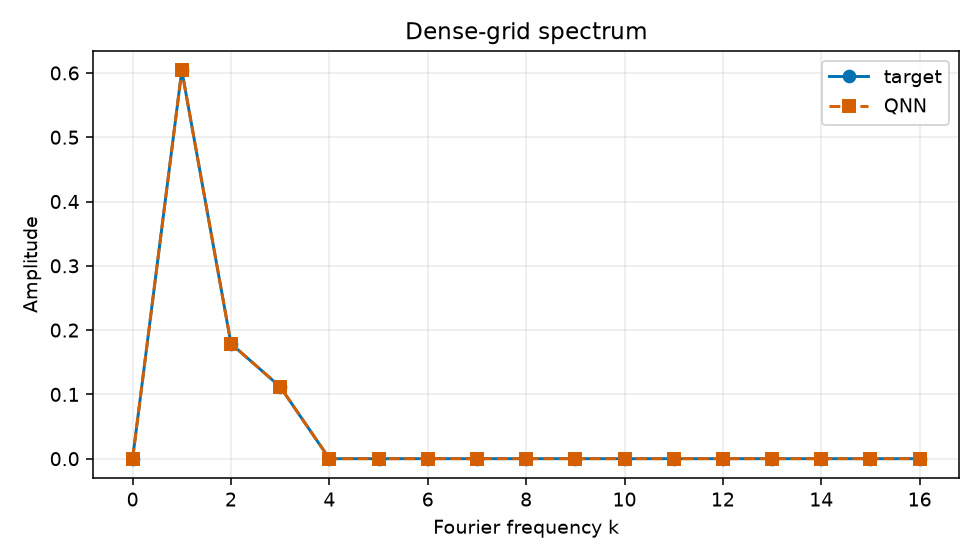

Uploads: 3; target frequencies: 3; train/validation/test: 64/128/512; objective: empirical training MSE only.
{
"run_id": "20261017T023956554592Z_reupload-3_k3_seed-0046_c7b5239b",
"comparison_group": "periodic-function-mse-zero-offset-reupload-sweep-z1-readout",
"data_uploads": 3,
"n_target_frequencies": 3,
"seed": 46,
"data_seed": 314159,
"dataset_sizes": {
"train": 64,
"validation": 128,
"test": 512
},
"target_components": [
[
1,
0.55,
0.25
],
[
2,
0.16,
0.08
],
[
3,
0.1,
0.05
]
],
"target_offset": 0.0,
"objective": "training-set MSE only",
"optimizer": "L-BFGS-B",
"iterations": 34,
"function_evaluations": 858,
"optimizer_success": true,
"optimizer_message": "CONVERGENCE: RELATIVE REDUCTION OF F <= FACTR*EPSMCH",
"initial_train_mse": 0.8120739543104878,
"final_train_mse": 9.899246936421584e-14,
"validation_mse": 1.2012132161828884e-13,
"test_mse": 1.2467970367256944e-13,
"known_frequency_fourier_baseline_test_mse": 2.126123450199506e-31,
"target_support": [
1,
2,
3
],
"predicted_support": [
1,
2,
3
],
"frequency_support_threshold_function_amplitude": 0.001,
"support_precision": 1.0,
"support_recall": 1.0,
"target_amplitudes_k0_to_16": [
3.129278520336287e-17,
0.6041522986797286,
0.1788854381999832,
0.11180339887498952,
2.1726615721703016e-17,
2.08338919985173e-17,
7.086725680473781e-18,
1.617279816428843e-17,
3.84330175122779e-18,
9.78496767727623e-18,
2.5811241320803445e-18,
5.559232478380886e-18,
4.36389433120424e-18,
8.739851310843146e-19,
2.3793742160921822e-18,
1.2134355070255081e-17,
6.278752932072422e-18
],
"predicted_amplitudes_k0_to_16": [
1.2312782035988593e-08,
0.6041520213208504,
0.1788854930799115,
0.11180338431838387,
1.1208010749871566e-17,
1.5496307290895748e-17,
8.052168630403433e-18,
2.2651615748703372e-17,
1.0139202845477528e-17,
2.4352947888234943e-18,
7.680124461571647e-19,
5.792710066347928e-18,
5.8657246574783056e-18,
1.0143775046487602e-17,
7.28978165581188e-18,
1.4545027284264972e-17,
7.698563303621117e-18
],
"frequency_amplitude_rmse_k0_to_16": 6.872932981843417e-08,
"artifacts": [
"dataset.npz",
"metrics.jsonl",
"parameters.npz",
"parameters.json",
"evaluation_outputs.npz",
"function_fit.png",
"spectrum.png",
"report.html"
]
}
